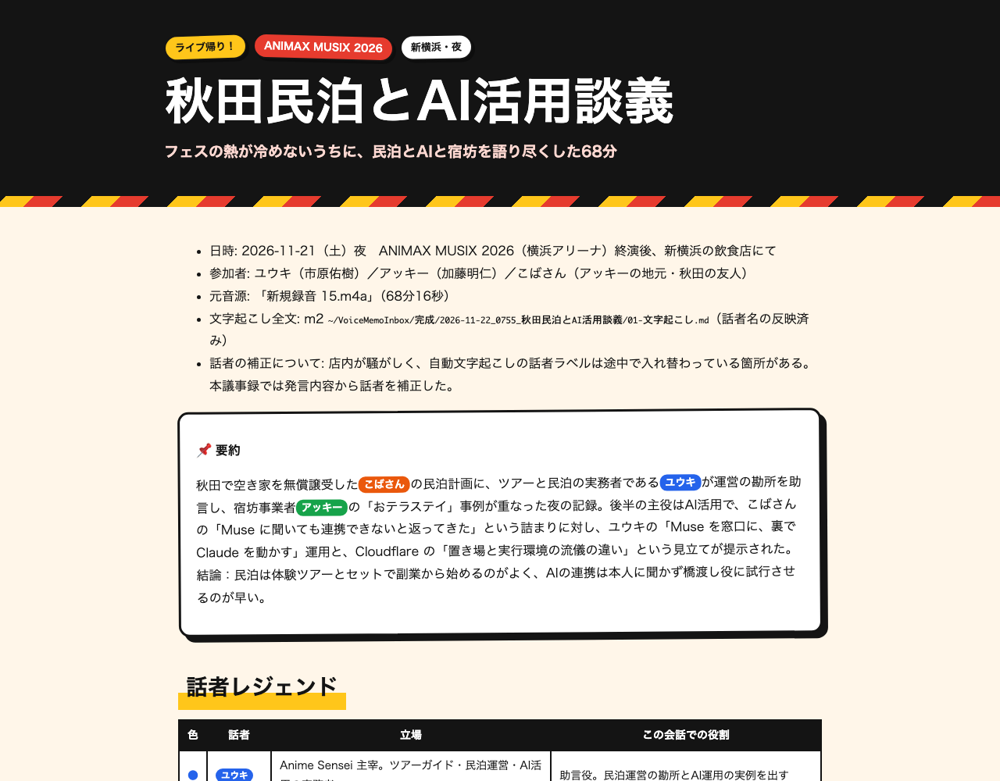
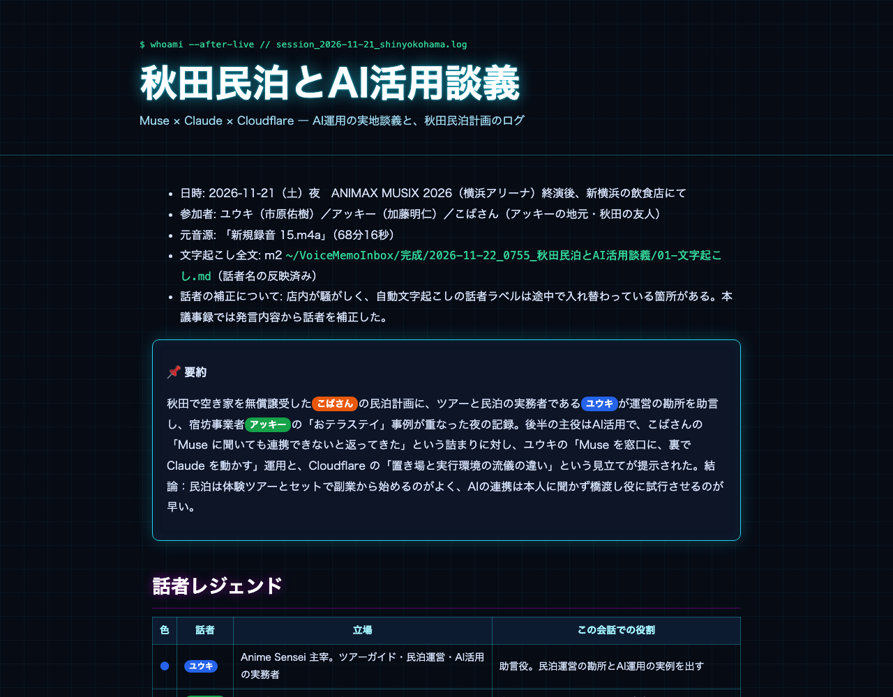
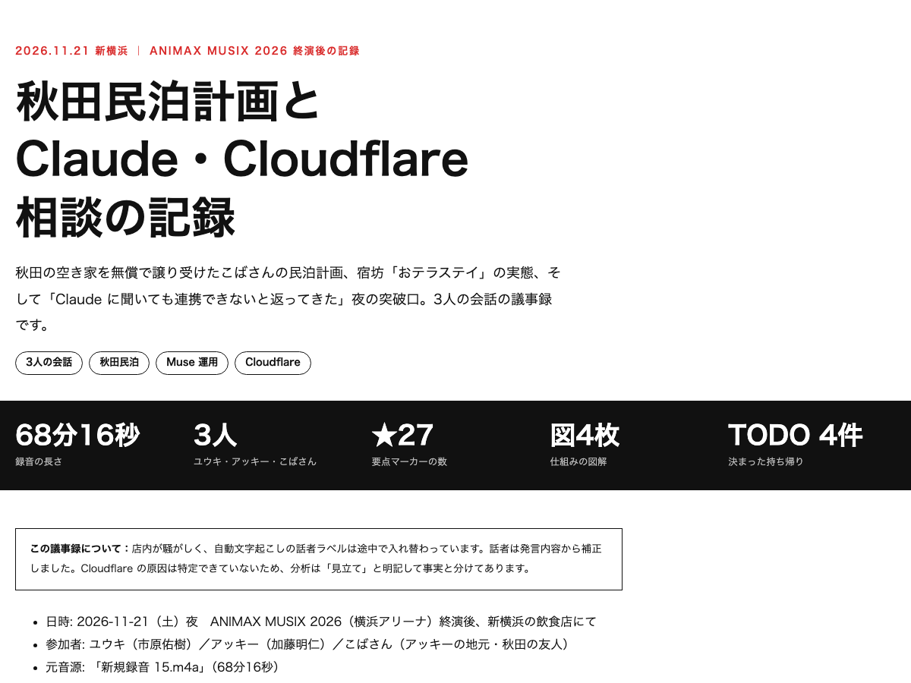
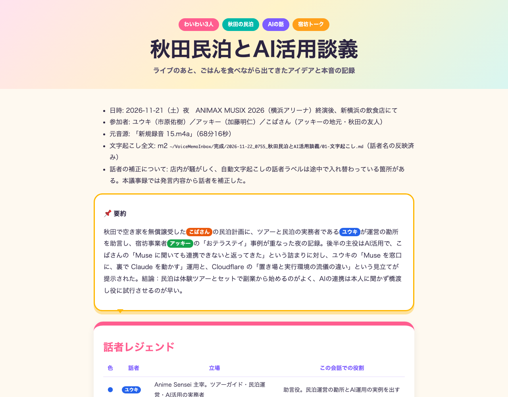
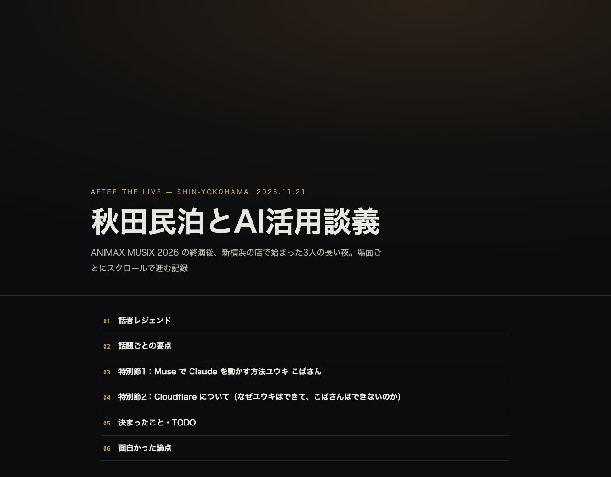

2026-11-21 ライブ帰りの議事録A「秋田民泊計画とClaude・Cloudflare相談の記録」（改訂版の全文）を、5つの見せ方でページ化しました。各案の下部には議事録Bの要約とPDFリンクも入っています。検討の結果、案3（雑誌・編集の大胆版）を採用し、正本ページに反映しました。各案は比較用に残しています。

ライブ帰りの熱量そのまま。大きなタイポ、斜めのステッカーチップ、斜線ストライプで「打ち上げ感」を出す案。

ダーク基調にネオンのグロー。Muse と Cloudflare の技術談義が主役に見える、ターミナル風の案。

「つあろぐ」の型を反映。句切りの巨大見出し、数字の帯（68分16秒・★23・図4枚）、正直な注記まで含めた編集デザイン。

明るい色面と丸みのあるカード、吹き出しの要約で会話の楽しさを出す案。節ごとに色が変わる。

夜の色と金の差し色。場面目次から入り、スクロールで SCENE が進む映画のような構成の案。